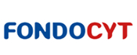

Modelo de empoderamiento digital para autogestión de salud
Investigadora principal
Dra. Karina Pérez Teruel
Desarrollar un sistema de promoción de salud mediante tecnologías informáticas para mujeres jóvenes en Villa Mella, integrando educación, prevención y autogestión.
Financiado por

Herramientas digitales de planificación urbana y gestión de riesgos
Investigadora principal
Ana María Moyano Molina
Crear herramientas unificadas de planificación, gestión de riesgos y participación pública para municipios resilientes y adaptados al cambio climático. Caso de estudio: Bajos de Haina.
Financiado por